Simulate with complex geometries and complex physics
DropletCollisions
DROPLETPHASE - Modeling of collisions between droplets
Through the use of
one may define the parameters of a collision model between droplets and boundaries. In this case, droplets will, assuming sensible choices of parameters, no longer pass through each other and behave more closely to granular matter.
determine the constants 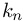 and 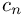 within the linear spring-damper model
are reserved for attractive forces along the normal direction. While R_a determines the range of adhesive forces (relative to the particle diameter ), E_a determines the energy level of the adhesive potential
determines the coefficient of friction 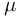 in Coulombs law of friction
Repulsive Normal Forces
The two parameters k_n, e_n in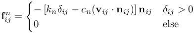0 \\ 0 & \text{else} \end{cases}
" class="latex" border="0">
which is employed to calculate forces along contact normal from overlap 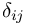 and relative velocity 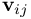. In particular, e_n represents the coefficient of restitution, i.e. the ratio of post- to pre-collisional velocity, from which the damper constant is calculated internally.
Defaults:
- If e_n is set to a negative value, the damping coefficient c_n will be set to the absolute value of e_n.
- If k_n is set to zero or a negative value, no collision forces will be calculated.
- Interacting DROPLETPHASE particles are allowed to have different size and spring stiffness, however the coefficient of restitution must be identical.
- During the separation phase, the damper force might produce attractive contributions which lead to a reversal of sign. By default, this is prevented by setting the total force to zero as soon as the attractive damper force becomes larger in magnitude than the repulsive elastic force. See DP_UseOnlyRepulsiveContactForce.
Attractive normal forces
The two parameters E_a, R_a in
ParticleInteraction($Material$) = (k_n, e_n, E_a, R_a)
BC_v($BC1$) = (%BND_COLLISION%, k_n, e_n, E_a, R_a)
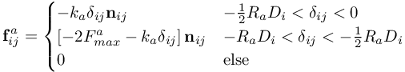
i.e. 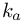 and 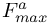 are chosen so that the integral over this force expression is given by E_a: 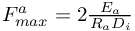
Defaults:
- If E_a is set to zero or a negative value, no attractive forces will be calculated.
- If R_a is set to zero or a negative value, it is overwritten by the default value of one.
Frictional forces
The parameter mu in
ParticleInteraction($Material$) = (k_n, e_n, E_a, R_a, mu)
BC_v($BC1$) = (%BND_COLLISION%, k_n, e_n, E_a, R_a, mu)
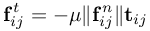
which is used to calculate forces along the tangential direction 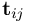 due to friction between the particles or between partciles and boundaries.
Defaults:
- If mu is set to zero or a negative value, no friction forces will be calculated.
- The coefficients of friction must be identical for all interacting DROPLETPHASE particles.
Important notes
- The stability of a simulation of interacting droplets can be improved by decreasing the value of COEFF_dt_d30
- If the DROPLETPHASE timestep becomes too small, one may use a subcycling as described in COMP_DropletphaseSubcycles
| This item is referenced in: | |
|---|---|
| CollidingDropletsInCone | Colliding droplets in cone geometry |
| COMP_DropletphaseSubcycles | number of subcycles for DROPLETPHASE (UCV) |
| %BND_COLLISION% | velocity boundary condition to represent collisions |
| ParticleInteraction | defines the dynamics of particle-particle interaction within the DROPLETPHASE as material property |
| Beta | Release notes for the MESHFREE beta executables |
| DROPLETPHASE | Explicit solver for droplets which may interact and collect as water films along boundaries |